Цепь переменного тока
Основные понятия
Переменный ток изменяется во времени по синусоидальному закону (рис. 1). Время, за которое совершается полный цикл изменений по величине и направлению, называется периодом и обозначается буквой Т. При векторном изображении синусоиды вектор периодически описывает угол α, равный 360° или в дуговом (радианном) измерении равный 2π. Следовательно, первый полупериод оканчивается при α = π, а первое максимальное значение синусоида принимает при π/2. Время, за которое вектор описывает угол 2π [рад], называется периодом. Число периодов в секунду называется частотой и обозначается буквой f.
Отсюда
f = 1/T
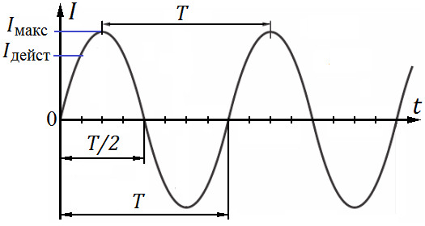
За единицу частоты принят герц (Гц). Частота промышленной сети переменною тока обычно равна 50 Гц.
В теории переменного тока часто приходится иметь дело с круговой частотой ω
ω = 2π f [1/сек]
В течение периода переменный ток, изменяющийся. по синусоидальному закону, достигает максимального значения 2 раза (при π/2 и 3π/2).
Максимальное значение (амплитуда) тока или напряжения обозначают соответственно Iмакс (Im) и Uмакс (Um). Действующее значение переменного тока равно величине такого постоянного тока, который, проходя через сопротивление, выделяет в нем (за одинаковое время с переменным током) равное количество тепла:
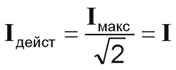
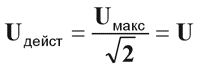
Следует иметь в виду, что, например, при расчете токовой нагрузки проводов принимается во внимание действующее значение тока. Это положение во многих случаях распространяется и на напряжение. Лишь при расчете изоляции на пробой необходимо учитывать максимальное (мгновенное) значение напряжения, так как пробой может произойти во время прохождения напряжения через максимум. На шкалах измерительных приборов указываются, как правило, действующие значения тока или напряжения.
Сопротивление в цепи переменного тока
В омическом (активном) сопротивлении ток совпадает по фазе с напряжением (фазовый угол равен нулю), поэтому расчет сопротивления конструктивных элементов РЭА в цепях переменного тока производится по формулам, выведенным для цепи постоянного тока.
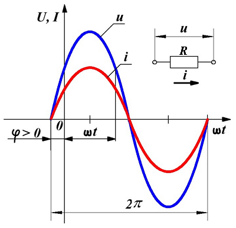
По мере повышения частоты начинает проявляться так называемый поверхностный эффект, сопротивление проводника увеличивается, так как происходит вытеснение тока к поверхности проводника. Этот эффект характеризуется глубиной проникновения тока δ. Величина δ численно равна такому расстоянию от поверхности (проводника), на котором плотность тока составляет 36% от плотности тока на поверхности (уменьшается в e раз). Существенно, что, хотя сопротивление проводника увеличивается с ростом частоты, оно по-прежнему остается активным, ток и напряжение в проводнике совпадают по фазе.
Конденсатор в цепи переменного тока
Если к конденсатору приложено переменное напряжение с заданной амплитудой, то величина
тока через конденсатор зависит от емкости и частоты.
Модуль величины емкостного сопротивления:
XC=1/(ωC) [Ом]
где:
С — емкость, Ф;
ω — круговая частота, 1/сек.
С повышением частоты емкостное сопротивление уменьшается.
Ток, проходящий через конденсатор, сдвинут по фазе относительно напряжения. Сдвиг зависит от отношения реактивного сопротивления Хс к активному. При этом ток опережает напряжение на угол φ. В идеальном конденсаторе ток опережает напряжение на 90°.
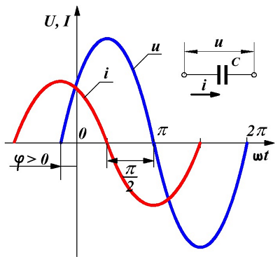
Это явление находит разнообразное применение в радиотехнике. Примером могут служить многозвенные фазосдвигающие цепочки, применяемые в RС-генераторах.
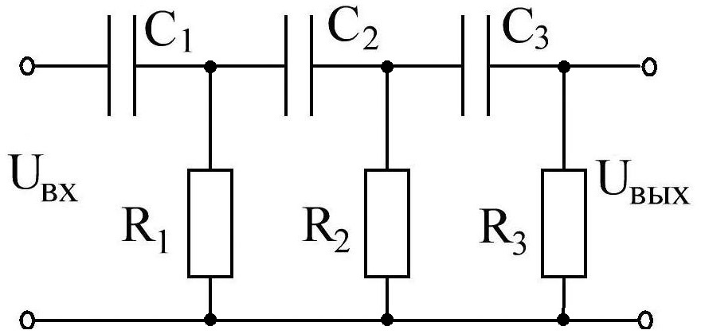
В трехзвенной CR-цепочке(рис. 4), применяемой в генераторе на полевом транзисторе с большой крутизной, генерируемая частота
f = 1/(15,4RC) [Гц]
где:
R — сопротивление, Ом;
С — емкость, Ф.
Требуемый коэффициент усиления каскада K>29.
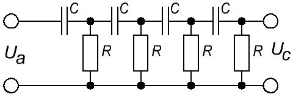
В четырехзвенной CR-цепочке(рис. 5), применяемой в генераторе, генерируемая частота:
f = 1/7,53RC [Гц]
Требуемый коэффициент усиления каскада K>18,4.
Два последовательно соединенных конденсатора составляют емкостной делитель переменного напряжения, коэффициент передачи, которого не зависит от частоты. Если параллельно конденсаторам в схеме делителя включаются активные сопротивления, то они должны по своей омической величине значительно превышать модули реактивных сопротивлений тех конденсаторов, параллельна которым включены.
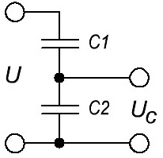
Для схемы на рис. 6 справедливо следующее выражение:
Uc = UC1/(C1+C2)
Емкостные делители напряжения применяются в параллельных колебательных контурах, когда, например, необходимо обеспечить разное входное и выходное сопротивления.
Индуктивность в цепи переменного тока
Сопротивление индуктивности переменному току
XL = ωL
где:
L — индуктивность, Гн;
ω — круговая частота, 1/сек.
С повышением частоты индуктивное сопротивление XL увеличивается.
В идеальной индуктивности ток отстает от напряжения на 90° (рис. 7) .
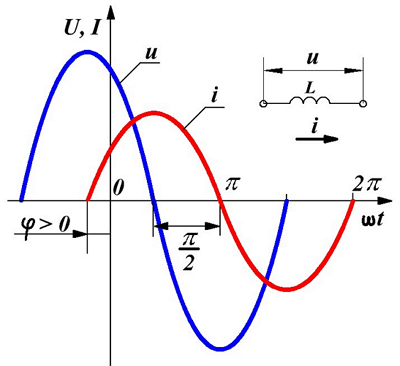
Наличие тепловых потерь в катушке можно отразить на схеме, включив омическое сопротивление потерь параллельно или последовательно с индуктивностью. Потери в катушках всегда значительно больше, чем потери в конденсаторах. Поэтому в схемах с катушкой и конденсатором часто можно пренебрегать сопротивлением потерь конденсатора. Сопротивление потерь в катушках обусловлено прежде всего поверхностным эффектом, сопротивлением провода катушки, потерями на гистерезис и на вихревые токи в сердечнике.
Мощность переменного тока
Различают активную (Ра), реактивную (Рр) и полную (Р) мощность:
Pa = U I cosφ [Вт - ватт];
Pp = U I sinφ [ВАр - вар (вольт-ампер реактивный)];
P = UI [В·А - вольт-ампер].
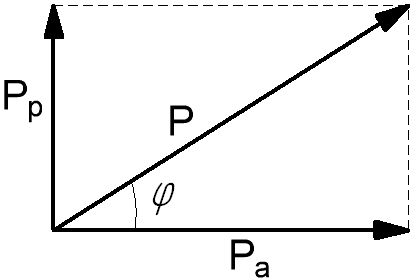
Между ними существуют следующие расчетные соотношения:
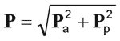
так как
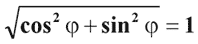
Напряжение U (в вольтах), ток I (в амперах) и сопротивление R (в омах) находятся в тесной связи с мощностью:
Ua = Pa/I = Ucosφ;
Up = Pp/I = Usinφ;
I = P/U;
Ia = Pa/UI cosφ;
Ip = Pp/U = Isinφ;
Ra = Ua/I = Pa/I2 = Z cosφ;
Rp = X = Up/I = Pp/I2 = Z sinφ;
R = Z = U/I = P/I2.